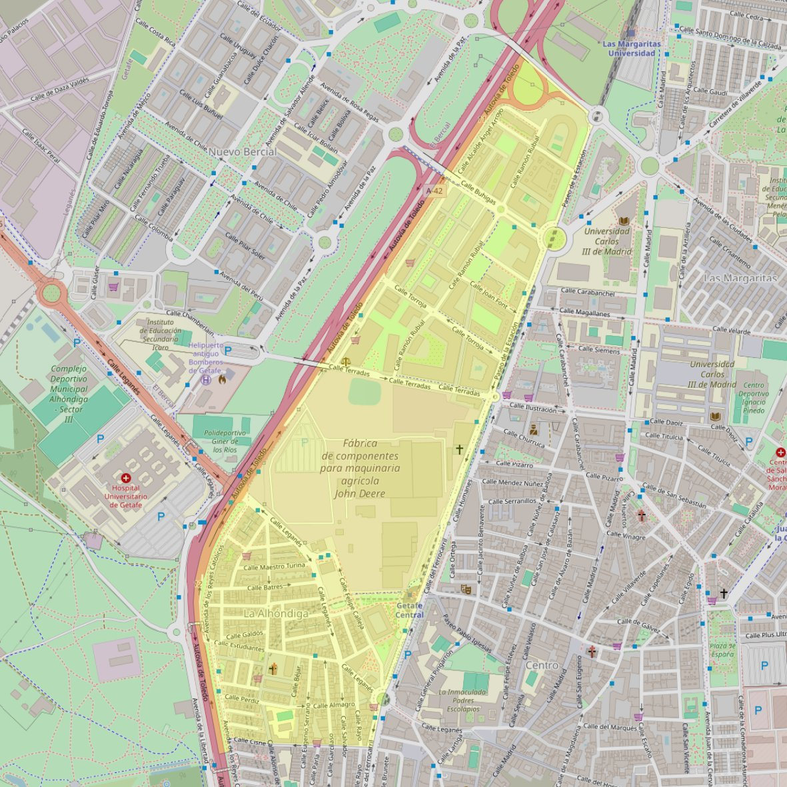

San Rafael Arcángel

- Arciprestazgo
- Getafe
- Población
- Getafe
- Dirección postal
- Pza. Rufino Castro, s/n
- Código postal
- 28904
- Extensión
- 0,80 km² (80 ha)
- Teléfono
- 916 861 289
- Correo electrónico
- sanrafaelarcangel-getafe@diocesisgetafe.es
Arciprestazgos y parroquias de la Diócesis de Getafe
